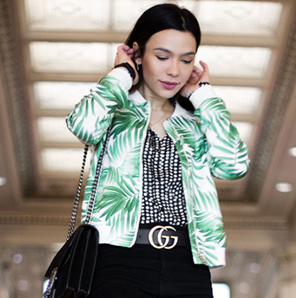
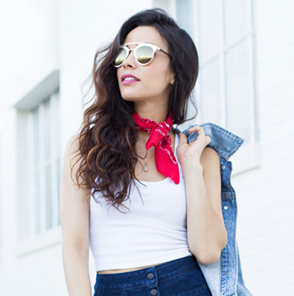
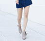

Style stories
style tips from top fashion bloggers
Alice kerley,
lonestarlookingglass.com
What do you love
about this shoe?
I love that the
Midi lip-on Sneaker in
Snake is so crazy-comfortable while also cute as can be.
I work in fashion marketing and often find myself running around taking photos, making quick trips across town or even climbing
ladders to get the best shot.
Hayet Rida
thathayetrida.com
What do you love
about this shoe?
The best part about these shoes is that I could style it so many ways and did not have to compromise on style.
While maintaining a more low profile look, I still throw in a mix of patterns (stripes and print), and tie it all together with a bold lip.
Jamie Walsh
glamlatte.com
What do you love
about this shoe?
I love not only how comfortable and supportive they are, but they are also super cute.
I'm all about cute workout gear that you feel good in; something bright and colorful that takes you from the gym to running errands.
Lavenda Memory
lavendascloset.com

What do you love
about this shoe?
This shoe is perfect for SO many fall outfits. The color is great and will complement my fall color palette.
The mid-heel height makes it a go-to daily shoe. The fringe and stud details makes it feel a bit more special and adds some personality to my outfit.
Lydia Webb
jettingjewels.com




What do you love
about this shoe?
I love that the tan color is very versatile – light enough for the summer, but also a rich hue for the transition to the fall season.
I try to invest in pieces that I can pair with just about everything in my closet and can restyle season after season.
Abigail Ochse
thechicmamas.com
What do you love
about this shoe?
I really love the biker style of these boots and tough edge they add to any outfit.
Plus, they are ridiculously comfortable. I would pick these over heels any day!